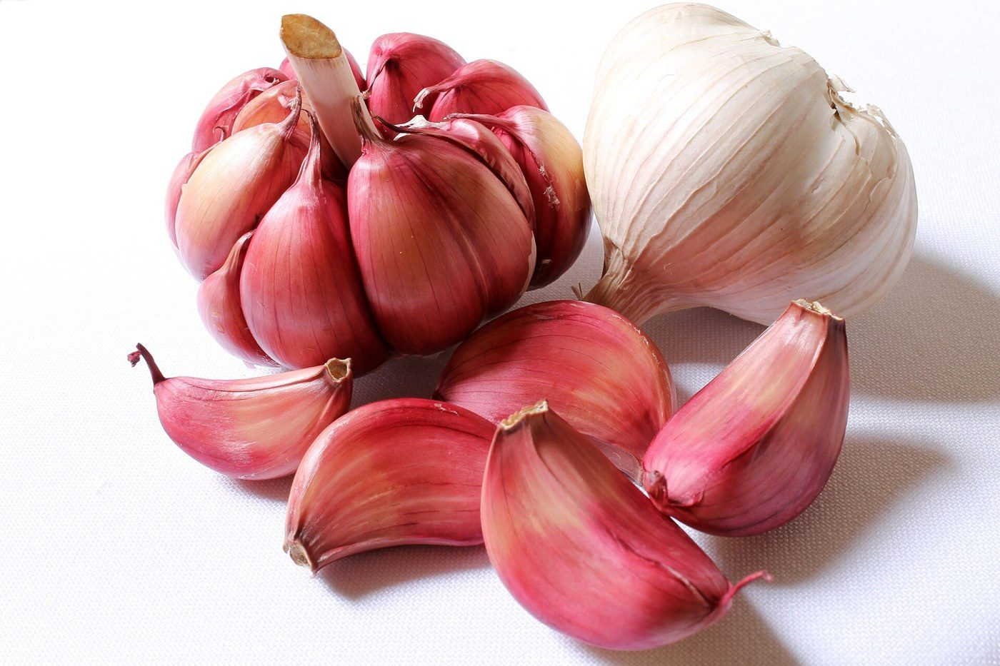
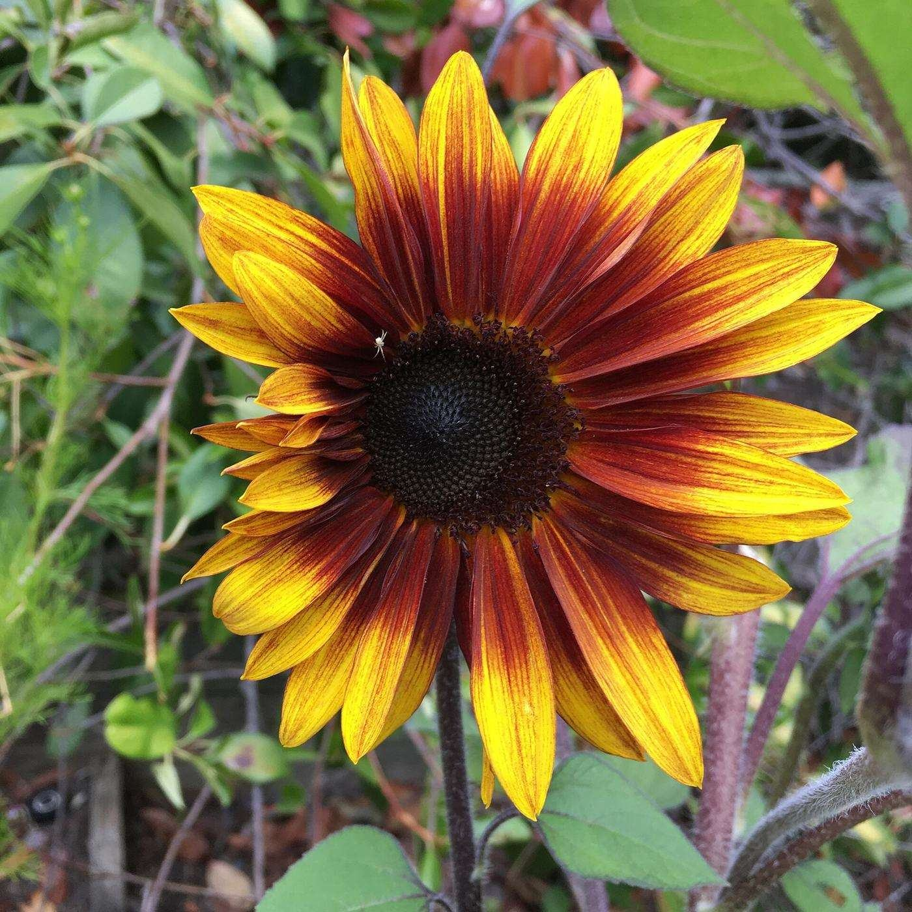

制作側の連想
小さなピアスを、配置図にしてみる
ピアスの部位を図にしたもので、制作側の連想です。お店の理念・由来とは無関係で、実在の製品や宝飾品の仕様を示すものでもありません。六つの部位に番号をふり、上の図と並べています。
凡例
六つの部位
- 1石(ストーン)先端につける飾りの石。光を受けて小さくきらめく、図の中でいちばん目立つ部分。
- 2爪(つめ)石のまわりを囲んで、石を台に留めるための細い突起。数本で支える形が多い。
- 3台座(皿)石を載せる平らな土台。裏側の中心に、ポストの根もとがつながっている。
- 4ポスト台座の裏からまっすぐ伸びる、細い軸。留め具が通っていく道すじになる。
- 5溝(みぞ)ポストの先に近い、輪のようにくびれた部分。留め具がここで止まる。
- 6キャッチポストの先に通して留める小さな留め具。蝶の羽のような形のものもある。
写真(イメージ)
写真(イメージ)


写真はイメージです。お店のものではありません。